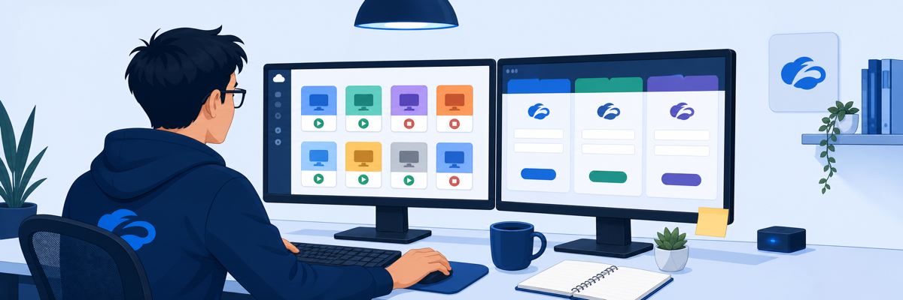
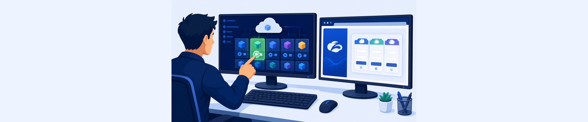
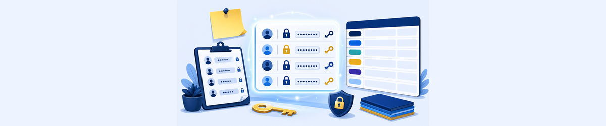

Lab 1: Connecting to the Virtual Lab
Scenario: You are a member of the Level 1 HelpDesk team at Safemarch. Before troubleshooting any Zscaler issue you need to confirm your virtual environment is running and locate your credentials.

Before touching a live environment, a good troubleshooter builds a mental map of what should be there — topology, roles, access constraints.
- What three types of resources does your Skytap training pod give you access to, and why does that separation matter for troubleshooting?
- You can access ZIA, ZPA, and ZDX Admin Portals as a Read-Only Administrator. What does this restriction prevent you from doing, and how does it affect the labs?
- What would happen to your ZCC enrollment and ongoing tests if the Corp: Client PC VM shuts down mid-lab?
Task 1.1: Test Your Lab Access and Start Your Environment
1 Access the Lab Environment
- On your laptop, open a browser window and navigate to the Skytap Access URL provided in your lab confirmation email.
- Enter your Skytap Passcode and click Go.
- If the Corp: Client PC VM is shown as shut down, click to start the VM.
- When prompted for Windows credentials, log in:
- Username:
Student - Password:
Admin-123!
- Username:
- If your machine is locked, click the key icon 🔑 to display usernames and passwords saved with the VM. Click Insert to paste into the VM.
- If the virtual desktop is too small or too large, click the resize icon to fit the frame to your current browser window.
Note: The ZIA, ZPA, and ZDX Admin Portals are cloud services accessible from any machine with an Internet connection. In some labs you should access these URLs from inside the Client PC VM to simulate a corporate device.

Lab Resources and Login Credentials
2 Locate Your Credentials
- At any time during the lab, click the Resources tab in the right window frame to access your:
- Lab Guide attachment (PDF download)
- Credential Information — your Session_Password and all department usernames
- Record your credentials in the Lab Configuration panel at the top of this page (enter your Student Prefix and Session Password, then click Save).
Important: In this lab you will access the ZIA, ZPA & ZDX Admin Portals as a Read-Only Administrator. This role affects what you will see — you cannot save any changes made in the portals.
3 Credential Reference
Your session credentials (enter your prefix above to auto-populate):
| Role | Username |
|---|---|
| ZIA Admin (Read-Only) | ptcb32-ADMIN@thezerotrustexchange.com |
| IT Department User | ptcb32-IT@thezerotrustexchange.com |
| HR Department User | ptcb32-HR@thezerotrustexchange.com |
| Marketing Department User | ptcb32-MKT@thezerotrustexchange.com |
| Contractor User | ptcb32-CON@thezerotrustexchange.com |
| OT User | ptcb32-OT@thezerotrustexchange.com |
| Sales Department User | ptcb32-SALES@thezerotrustlab.com |
| Session Password (all accounts) | 9UnV@7-g |
| ZIA Admin Portal URL | https://admin.zscalerthree.net |
Note: The Session Password is unique to your pod and is the same for all admin and user accounts. The Windows VM local credentials (Student / Admin-123!) are separate from the Zscaler account credentials.
